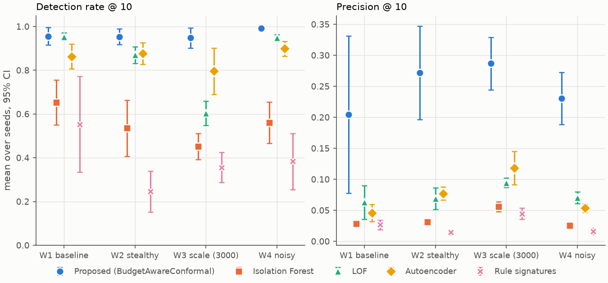
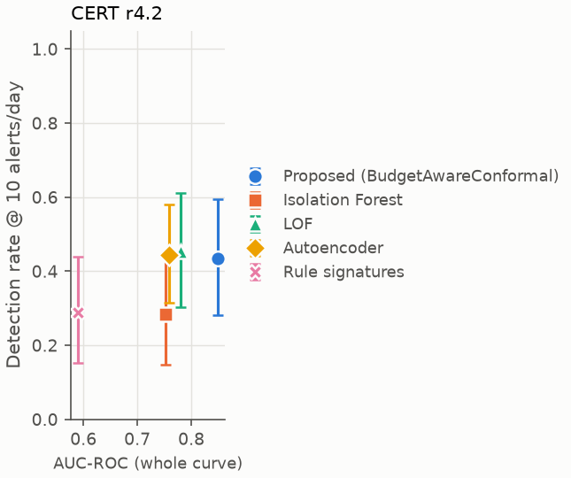
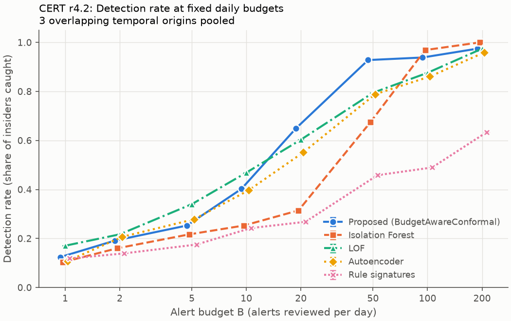

[Team member names, affiliation] · Project P20 · October 2026
Code: [GitHub URL] · Demo video: [video URL]
Insider-threat detectors for cloud audit logs are usually compared by the area under the ROC curve. A security team, however, works at a single operating point: the few alerts an analyst can review each day. Alerts that do not say what deviated are dismissed. We evaluate detectors on AWS-CloudTrail-style audit logs at fixed daily alert budgets (10, 50 and 100 alerts/day). We propose BudgetAwareConformal, which judges every identity against its own history with robust per-feature deviations, calibrates them with pooled split-conformal p-values, keeps four behaviour families (identity, resource, timing, volume) separate, and explains each alert by naming the deviating family and features. On synthetic organisations with five planted insider scenarios (4 workloads x 5 seeds x 3 rolling temporal origins; settings frozen on separate validation data), at 10 alerts/day the method detects 96% of insiders against 65% for Isolation Forest on the baseline workload, with 0.204 vs 0.028 precision (oracle ceiling 0.30). The pre-registered relative-gain hypotheses hold in 7 of 8 workload tests. An ablation shows the gain comes from per-identity baselines, pooled calibration and family separation, and mostly from resource-access deviations. Duplicate suppression does not help. A crossover triage study with four reviewers measures whether the explanations alone suffice for triage.
Cloud control planes record every API call (who, what action, which resource, outcome) in audit logs such as AWS CloudTrail. When credentials are misused by an insider, or by an outsider holding valid credentials, this log is often the only evidence. Detection research usually reports threshold-free metrics such as AUC-ROC. But a Security Operations Centre (SOC) runs at one fixed point: analysts can examine only a small number of alerts per day. Analysts report that the vast majority of alarms they see are false positives and that they need alarms that are explainable and contextual [9]. A detector with a good curve can still be useless at ten alerts per day, and an alert that only says "anomalous" will be dismissed.
We address both gaps with four objectives: O1 detect deviations in identity behaviour, resource access and temporal pattern; O2 evaluate at fixed alert budgets reflecting analyst capacity; O3 generate per-alert explanations naming the deviation responsible; and O4 test whether those explanations let a reviewer triage the alert.
Contributions. (i) A leak-free evaluation protocol for cloud audit-log insider detection at fixed per-day alert budgets, reporting detection rate, precision against its oracle ceiling, and time to detection with confidence intervals over independent seeds. (ii) BudgetAwareConformal, a per-identity detector with pooled conformal calibration that is fast (seconds for 3,000 identities) and explains every alert from its own attribution. (iii) A component and feature-family ablation and parameter sweeps that locate where the gain comes from, including a negative result for alert suppression. (iv) A pre-registered crossover triage study protocol for explanation usability. (v) A reproducible synthetic CloudTrail testbed with five insider scenarios and benign look-alikes.
Insider-threat detection. Most work uses the synthetic CERT data and reports AUC, accuracy or F1 [2, 3, 4]. Le and Zincir-Heywood [1] evaluate unsupervised ensembles against an investigation budget expressed as a share of all sessions. We instead fix the number of alerts per day, which is how an analyst queue operates. Facade [5] shows at Google scale that judging an event in the context of its user and resource is what makes precision workable, but its data and system are private.
Cloud audit logs. Isolation Forest is used directly on CloudTrail for credential-abuse detection and evaluated with F1 [6]. Cloud anomaly benchmarks focus on operational faults and per-case classification [7].
Calibration. Conformal p-values give distribution-free outlier tests [8]. We apply them to per-identity normalised scores pooled across identities.
Explanations and analysts. Pitfalls such as temporal snooping, inappropriate metrics and the
base-rate fallacy are common in security ML [10]. Only 14% of security XAI studies evaluate
explanations with users [11]. SHAP-based insider-threat work re-classifies or labels detections
automatically [12, 13]. Alert-fatigue work acts downstream on IDS alerts with supervision [14]. The
full verified gap table is in docs/related_work.md.
Detectors score every (identity, day). Each day the analyst receives the top-B scored rows. Hypotheses are stated against Isolation Forest on the identical feature matrix, at B = 10, on the test windows, with 95% intervals from a paired bootstrap over seeds. A hypothesis counts as supported only if the whole interval clears its threshold.
CERT data was not used (a deliberate scope decision; see Section 7). A vectorised generator produces CloudTrail-schema events for 1,000-3,000 identities over 180 days. Five roles (analyst, developer, admin, backup service, CI runner) each have time zones, working hours, IPs, user agents and a personal working set of S3 buckets. Benign look-alikes include admin on-call bursts, backup-service night reads, travel from new IPs, logins without MFA, developer error bursts, admin key creation and month-end spikes. Five insider scenarios are planted:
| ID | Scenario | Signature |
|---|---|---|
| S1 | Exfiltration after hours | 03:00 login from new IP, ~50 sensitive reads, public snapshot |
| S2 | Departing insider | three-week ramp of sensitive reads, then write to an external bucket |
| S3 | Privilege escalation | key for another user, assume admin, policy change, external e-mail |
| S4 | Credential stuffing | burst of failed logins from a new IP, success, reconnaissance |
| S5 | Low-and-slow | a few extra reads of one sensitive bucket every working day for a month |
Four workloads vary the conditions: W1 baseline; W2 stealthy (attack magnitude halved, slow scenarios twice as likely); W3 3,000 identities; W4 2.5x more benign look-alikes and more service accounts. A LocalStack (AWS-compatible) container is the cloud testbed.
32 features per identity-day in four families, all causal: anything "new" or "usual" is computed only from earlier days, and a test checks that appending future events never changes earlier rows.
Explanations (O3). For each alert: the family with the smallest p-value, its top-3 features by deviation, today's value and the identity's usual value, plus any other family with p < 0.01. A Kernel-SHAP cross-check on 20 alerts compares SHAP's top feature with the named features.
Isolation Forest (the baseline named in the problem statement; tuned on validation under the same protocol), Local Outlier Factor and an MLP autoencoder, all on the identical feature matrix. A 12-rule signature engine in the style of commercial cloud threat detection (root use, public exposure, logging disabled, admin role assumed by a non-admin, brute force then success, and others).
| Workload | Proposed DR@10 | Isolation Forest | LOF | Autoencoder | Rules |
|---|---|---|---|---|---|
| W1 baseline | 0.956 | 0.653 | 0.953 | 0.863 | 0.553 |
| W2 stealthy | 0.954 | 0.536 | 0.870 | 0.877 | 0.246 |
| W3 scale | 0.948 | 0.451 | 0.604 | 0.796 | 0.356 |
| W4 noisy | 0.992 | 0.561 | 0.948 | 0.899 | 0.383 |
| Workload | Proposed P@10 | Isolation Forest | LOF | Autoencoder | Rules | Oracle |
|---|---|---|---|---|---|---|
| W1 | 0.204 | 0.028 | 0.063 | 0.046 | 0.027 | 0.304 |
| W2 | 0.272 | 0.031 | 0.069 | 0.077 | 0.014 | 0.511 |
| W3 | 0.287 | 0.056 | 0.094 | 0.118 | 0.044 | 0.710 |
| W4 | 0.230 | 0.026 | 0.070 | 0.054 | 0.016 | 0.323 |
Table 1. Means over 5 seeds (each the average of 3 temporal origins). 95% intervals are in
results/campaign/summary.csv and in Figure 1.

Figure 1. Detection rate and precision at 10 alerts/day per workload, mean and 95% CI over seeds.
Hypotheses.
| W1 | W2 | W3 | W4 | |
|---|---|---|---|---|
| H1a DR@10 >= +40% | +46% [+31%, +65%] NOT SUPPORTED | +78% SUPPORTED | +110% SUPPORTED | +77% SUPPORTED |
| H1b P@10 >= +30% | +624% SUPPORTED | +769% SUPPORTED | +413% SUPPORTED | +796% SUPPORTED |
| H2 MTTD <= -25% | -35% NOT SUPPORTED | -81% SUPPORTED | -5% NOT SUPPORTED | -13% NOT SUPPORTED |
H1 holds in 7 of 8 tests. On W1, H1a's point estimate exceeds +40% but its interval does not. H2 holds only on the stealthy workload: with daily batches, every detector that catches an insider does so within about a day, so there is little room to be faster.
Where the gain comes from (W1, DR@10 per scenario). Isolation Forest catches the loud single-day attacks (S1 100%, S4 100%) but misses most slow ones (S2 29%, S5 48%). The proposed detector reaches S2 100% and S5 88%: slow attacks are small deviations for the population but large ones for the individual.
Ranked by AUC-ROC, the proposed method is first on every workload, and the ranking at 10 alerts/day agrees at the top. Between baselines the order changes: LOF and the autoencoder swap places in W2 and W4, and 9% of detector pairs flip across individual runs. More importantly, AUC compresses differences that matter at the operating point. On W4, Isolation Forest's AUC (0.753) is almost that of LOF (0.762), yet at 10 alerts/day it catches 56% of insiders against 95% (Figure 2).

Figure 2. Whole-curve AUC (x) vs detection rate at 10 alerts/day (y).
| Variant | DR@10 W1 | P@10 W1 | DR@10 W2 | P@10 W2 |
|---|---|---|---|---|
| Full (tuned) | 0.951 | 0.168 | 0.951 | 0.238 |
| -C1 population baseline | 0.925 | 0.040 | 0.869 | 0.052 |
| -C2 no calibration | 0.938 | 0.046 | 0.890 | 0.064 |
| -C3 one pooled family | 0.932 | 0.041 | 0.878 | 0.059 |
| +C4 suppress 3 days | 0.944 | 0.072 | 0.956 | 0.112 |
| Fisher fusion | 0.892 | 0.092 | 0.773 | 0.114 |
| -resource family | 0.658 | 0.026 | 0.310 | 0.015 |
| -identity family | 0.951 | 0.169 | 0.956 | 0.284 |
| Isolation Forest | 0.714 | 0.029 | 0.534 | 0.030 |
What the ablation shows:

Figure 3. Detection rate as the daily budget grows from 1 to 200 (W1, 5 seeds).
At a budget of 1 alert/day the proposed detector catches 65% of insiders, against Isolation Forest's 36%. On this workload LOF matches it on detection at small budgets (71% at 1/day). The proposed method's advantage over LOF is precision, and robustness as the organisation grows.
As the organisation grows from 250 to 3,000 identities, at 10 alerts/day:
| Detector | DR@10 at 250 | DR@10 at 3,000 | Fit + score time at 3,000 |
|---|---|---|---|
| Proposed | 1.00 | 0.97 | 1.2 s |
| Isolation Forest | 0.96 | 0.47 | 4.0 s |
| LOF | 104 s |
Isolation Forest and LOF degrade as identities are added; the proposed detector does not. With more identities, a global model sees more "normal-looking extremes", while a per-identity baseline is unaffected.
Cutting attack magnitude to a quarter (stealth x0.25) does not lower the proposed detector's DR@10 (0.97, vs 0.95 at full strength; Isolation Forest 0.78). This matches the ablation: the signal is novelty (a sensitive resource this identity never touched), which is present whatever the volume. Attacks that avoid novel resources are the open problem.
cal_fraction (0.1-0.4) leaves DR@10 unchanged (0.951 to
0.951), so the result is not sensitive to that choice.
Every alert of the proposed detector carries an explanation, for example:
Resource access deviation (p = 0.00058)
- calls on sensitive buckets (finance / hr / pii / security): 9 (usually 0)
- share of calls on sensitive buckets: 21% (usually 0%)
Kernel SHAP's top feature was among the named features in all 20 cross-checked alerts. This is expected rather than strong independent validation, because the tuned score is driven by the largest single family deviation.
Triage study (pre-registered; docs/triage_study/PROTOCOL.md).
docs/THREATS_TO_VALIDITY.md gives the full list, with numbers.
Evaluated where analysts actually operate, a fixed number of alerts per day, judging each cloud identity against its own history with pooled conformal calibration catches far more insiders, with several times higher precision, than global anomaly detectors and rule signatures on our synthetic organisations, and every alert explains which behaviour deviated. The negative and qualifying results matter as much: suppression does not help, the gain rests mainly on resource-access deviations, and whether explanations improve triage is settled by the human study rather than assumed. Next steps are real CloudTrail data, attacks that stay inside normal resource sets, and a triage study with outside analysts.
[1] Le & Zincir-Heywood, IEEE TNSM 18(2), 2021. [2] Yuan & Wu, Computers & Security 104, 2021.
[3] Li et al., arXiv:2108.10567, 2021. [4] Tian et al., Cybersecurity 8, 2025.
[5] Kantchelian et al., Facade, arXiv:2412.06700, 2024. [6] Haunschild et al., Springer ISRL, 2026.
[7] Zou et al., arXiv:2508.01844, 2025. [8] Bates et al., Annals of Statistics 51(1), 2023.
[9] AlAhmadi et al., USENIX Security 2022. [10] Arp et al., USENIX Security 2022.
[11] Nadeem et al., IEEE EuroS&P 2023. [12] Grzeczkowicz et al., CRiSIS 2024 (LNCS 2025).
[13] Faqihi et al., FGCS 2026. [14] Ndichu et al., arXiv:2605.22324 (ACSAC 2026).
Full entries: docs/references.bib.